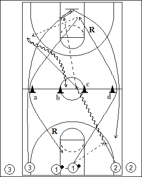

Catégorie : FASTBREAK (Fb-014)
Déroulement
- Trois files de joueurs à une baseline. Les ballons sont dans la file du milieu.
- Le premier joueur 1 passe au premier joueur de la file 2 . Celui-ci dribble jusqu’au milieu du terrain (entre les cônes b et c) et passe au premier joueur de la file 3 qui réalise le lay-up, après être passé à l’extérieur du cône a. Le premier joueur de la file 1 effectue le rebond et la première passe vers 2 qui est venu demander le ballon à hauteur de la ligne des lancers-francs. De nouveau, 2 dribble vers le centre du terrain (entre les cônes b et c) et passe pour un lay-up à 3 qui est passé derrière le cône d. En résumé : 1 effectue tous les rebonds et premières passes; 2 reçoit les premières passes, dribble vers le centre et passe à 3; 3 réalise tous les lay-ups.
- 1 va en 2, 2 en 3 et 3 en 1.
Coaching points
- On peut réaliser deux ou trois aller-retour avant de quitter le terrain.
- Le mouvement peut partir vers la droite (lay-up à gauche) ou vers la gauche (lay-up à droite).